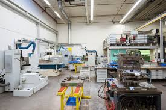

På Tavora börjar allt med en enkel fråga: Hur gör vi det enklare, roligare och snyggare att tänka stort? Det är frågan som driver varje ny idé, varje ritning och varje produkt vi skapar. Vår tillverkning är inte bara en process – det är ett kreativt äventyr där funktion möter fantasi.

När vi utvecklar nya produkter sker det i nära samarbete mellan designers, ingenjörer och, faktiskt, en hel del whiteboard-entusiaster. Det hela börjar med skisser – ibland gjorda just på våra egna tavlor – där vi tänker fritt och testar nytt. När en idé känns rätt, går vi vidare till prototyper och materialval, där kvalitet alltid är i fokus.

Vi använder en unik kombination av slitstarka, återvunna material som stål och keramiska ytskikt. Ytan på våra whiteboards behandlas för att stå emot både slitage och fantasisprängda brainstorm-sessioner – och ja, våra tavlor älskar att bli ritade på. Allt skärs med hög precision, och varje del monteras noggrant i vår egen verkstad.

Men det stannar inte vid tavlan. Vi tillverkar även våra egna pennor, magneter och rengöringsprodukter – alltid med användarvänlighet och hållbarhet i åtanke. Våra pennor ligger skönt i handen, och våra rengöringssprayer är både effektiva och snälla mot miljön.
Innan någon produkt får bära Tavora-loggan genomgår den rigorösa tester. Vi låter både pedagoger, designers och verkliga användare prova dem i vardagen – allt för att säkerställa att varje detalj fungerar som den ska. När allt är klart packas produkterna med omsorg i återvinningsbara förpackningar, ofta med en liten hälsning från oss.
För även om vi säljer whiteboard-material, är det egentligen något större vi levererar: en plats för idéer att växa, en yta för tankar att ta form – och ett verktyg för att skapa något nytt.